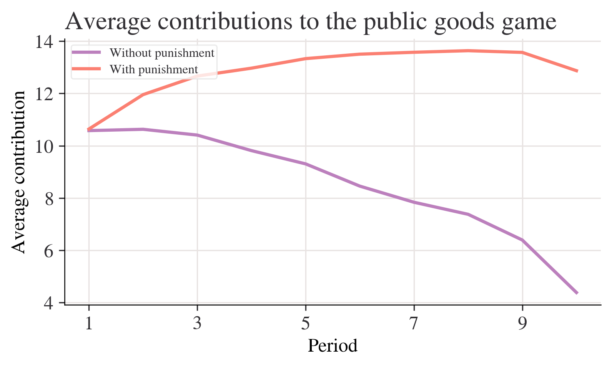
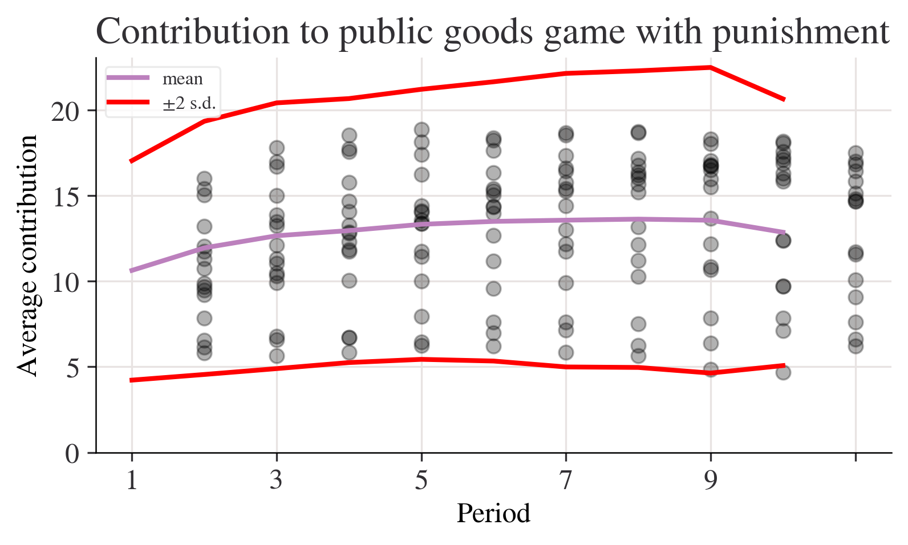

import pandas as pd
import matplotlib as mpl
import matplotlib.pyplot as plt
import numpy as np
from pathlib import Path
import pingouin as pg
from lets_plot import *
LetsPlot.setup_html(no_js=True)
### You don't need to use these settings yourself,
### they are just here to make the charts look nicer!
# Set the plot style for prettier charts:
plt.style.use(
"https://raw.githubusercontent.com/aeturrell/core_python/main/plot_style.txt"
)practice1
practice2
import pandas as pd
import matplotlib as mpl
import matplotlib.pyplot as plt
import numpy as np
from pathlib import Path
import pingouin as pg
from lets_plot import *LetsPlot.setup_html(no_js=True)plt.style.use(
"https://raw.githubusercontent.com/aeturrell/core_python/main/plot_style.txt"
)read_file = pd.read_excel ("/Users/yinziyi/Documents/白大教育管理/imformation/homework/practice2/doing-economics-datafile-working-in-excel-project-2.xlsx")data_np = pd.read_excel(
"/Users/yinziyi/Documents/白大教育管理/imformation/homework/practice2/doing-economics-datafile-working-in-excel-project-2.xlsx",
usecols="A:Q",
header=1,
index_col="Period",
)
data_n = data_np.iloc[:10, :].copy()
data_p = data_np.iloc[14:24, :].copy()mean_n_c = data_n.mean(axis=1)
mean_p_c = data_p.agg(np.mean, axis=1)fig, ax = plt.subplots()
mean_n_c.plot(ax=ax, label="Without punishment")
mean_p_c.plot(ax=ax, label="With punishment")
ax.set_title("Average contributions to the public goods game")
ax.set_ylabel("Average contribution")
ax.legend();
compare_grps = pd.DataFrame(
[mean_n_c.loc[[1, 10]], mean_p_c.loc[[1, 10]]],
index=["Without punishment", "With punishment"],
)
# Rename columns to have 'round' in them
compare_grps.columns = ["Round " + str(i) for i in compare_grps.columns]
# Swap the column and index variables around with the transpose function, ready for plotting (.T is transpose)
compare_grps = compare_grps.T
# Make a bar chart
compare_grps.plot.bar(rot=0);
n_c = data_n.agg(["std", "var", "mean"], 1)
n_c| std | var | mean | |
|---|---|---|---|
| Period | |||
| 1 | 2.020724 | 4.083325 | 10.578313 |
| 2 | 2.238129 | 5.009220 | 10.628398 |
| 3 | 2.329569 | 5.426891 | 10.407079 |
| 4 | 2.068213 | 4.277504 | 9.813033 |
| 5 | 2.108329 | 4.445049 | 9.305433 |
| 6 | 2.240881 | 5.021549 | 8.454844 |
| 7 | 2.136614 | 4.565117 | 7.837568 |
| 8 | 2.349442 | 5.519880 | 7.376388 |
| 9 | 2.413845 | 5.826645 | 6.392985 |
| 10 | 2.187126 | 4.783520 | 4.383769 |
p_c = data_p.agg(["std", "var", "mean"], 1)fig, ax = plt.subplots()
n_c["mean"].plot(ax=ax, label="mean")
# mean + 2 standard deviations
(n_c["mean"] + 2 * n_c["std"]).plot(ax=ax, ylim=(0, None), color="red", label="±2 s.d.")
# mean - 2 standard deviations
(n_c["mean"] - 2 * n_c["std"]).plot(ax=ax, ylim=(0, None), color="red", label="")
for i in range(len(data_n.columns)):
ax.scatter(x=data_n.index, y=data_n.iloc[:, i], color="k", alpha=0.3)
ax.legend()
ax.set_ylabel("Average contribution")
ax.set_title("Contribution to public goods game without punishment")
plt.show();
fig, ax = plt.subplots()
p_c["mean"].plot(ax=ax, label="mean")
# mean + 2 sd
(p_c["mean"] + 2 * p_c["std"]).plot(ax=ax, ylim=(0, None), color="red", label="±2 s.d.")
# mean - 2 sd
(p_c["mean"] - 2 * p_c["std"]).plot(ax=ax, ylim=(0, None), color="red", label="")
for i in range(len(data_p.columns)):
ax.scatter(x=data_p.index, y=data_p.iloc[:, i], color="k", alpha=0.3)
ax.legend()
ax.set_ylabel("Average contribution")
ax.set_title("Contribution to public goods game with punishment")
plt.show();
data_p.apply(lambda x: x.max() - x.min(), axis=1)Period
1 10.199675
2 12.185065
3 12.689935
4 12.625000
5 12.140375
6 12.827541
7 13.098931
8 13.482621
9 13.496754
10 11.307360
dtype: float64test_function = lambda a, b, c: a**2 + b**2 + c**2
# Now we apply the function by handing over (in parenthesis) the following inputs: a=3, b=4 and c=5
test_function(3, 4, 5)50range_function = lambda x: x.max() - x.min()
range_p = data_p.apply(range_function, axis=1)
range_n = data_n.apply(range_function, axis=1)fig, ax = plt.subplots()
range_p.plot(ax=ax, label="With punishment")
range_n.plot(ax=ax, label="Without punishment")
ax.set_ylim(0, None)
ax.legend()
ax.set_title("Range of contributions to the public goods game")
plt.show();
funcs_to_apply = [range_function, "max", "min", "std", "mean"]
summ_p = data_p.apply(funcs_to_apply, axis=1).rename(columns={"<lambda>": "range"})
summ_n = data_n.apply(funcs_to_apply, axis=1).rename(columns={"<lambda>": "range"})summ_n.loc[[1, 10], :].round(2)| range | max | min | std | mean | |
|---|---|---|---|---|---|
| Period | |||||
| 1 | 6.14 | 14.10 | 7.96 | 2.02 | 10.58 |
| 10 | 7.38 | 8.68 | 1.30 | 2.19 | 4.38 |
summ_p.loc[[1, 10], :].round(2)| range | max | min | std | mean | |
|---|---|---|---|---|---|
| Period | |||||
| 1 | 10.20 | 16.02 | 5.82 | 3.21 | 10.64 |
| 10 | 11.31 | 17.51 | 6.20 | 3.90 | 12.87 |
pg.ttest(x=data_n.iloc[0, :], y=data_p.iloc[0, :])--------------------------------------------------------------------------- TypeError Traceback (most recent call last) Cell In[49], line 1 ----> 1 pg.ttest(x=data_n.iloc[0, :], y=data_p.iloc[0, :]) File /Applications/anaconda3/lib/python3.12/site-packages/pingouin/parametric.py:232, in ttest(x, y, paired, alternative, correction, r, confidence) 229 paired = False 231 # Remove rows with missing values --> 232 x, y = remove_na(x, y, paired=paired) 233 nx, ny = x.size, y.size 235 if ny == 1: 236 # Case one sample T-test File /Applications/anaconda3/lib/python3.12/site-packages/pingouin/utils.py:243, in remove_na(x, y, paired, axis) 240 return _remove_na_single(x, axis=axis), y 241 if x.ndim != y.ndim or paired is False: 242 # x and y do not have the same dimension --> 243 x_no_nan = _remove_na_single(x, axis=axis) 244 y_no_nan = _remove_na_single(y, axis=axis) 245 return x_no_nan, y_no_nan File /Applications/anaconda3/lib/python3.12/site-packages/pingouin/utils.py:172, in _remove_na_single(x, axis) 167 """Remove NaN in a single array. 168 This is an internal Pingouin function. 169 """ 170 if x.ndim == 1: 171 # 1D arrays --> 172 x_mask = ~np.isnan(x) 173 else: 174 # 2D arrays 175 ax = 1 if axis == "rows" else 0 TypeError: ufunc 'isnan' not supported for the input types, and the inputs could not be safely coerced to any supported types according to the casting rule ''safe''
pg.ttest(x=data_n.iloc[0, :], y=data_p.iloc[0, :], paired=True)--------------------------------------------------------------------------- TypeError Traceback (most recent call last) Cell In[50], line 1 ----> 1 pg.ttest(x=data_n.iloc[0, :], y=data_p.iloc[0, :], paired=True) File /Applications/anaconda3/lib/python3.12/site-packages/pingouin/parametric.py:232, in ttest(x, y, paired, alternative, correction, r, confidence) 229 paired = False 231 # Remove rows with missing values --> 232 x, y = remove_na(x, y, paired=paired) 233 nx, ny = x.size, y.size 235 if ny == 1: 236 # Case one sample T-test File /Applications/anaconda3/lib/python3.12/site-packages/pingouin/utils.py:250, in remove_na(x, y, paired, axis) 247 # At this point, we assume that x and y are paired and have same dimensions 248 if x.ndim == 1: 249 # 1D arrays --> 250 x_mask = ~np.isnan(x) 251 y_mask = ~np.isnan(y) 252 else: 253 # 2D arrays TypeError: ufunc 'isnan' not supported for the input types, and the inputs could not be safely coerced to any supported types according to the casting rule ''safe''